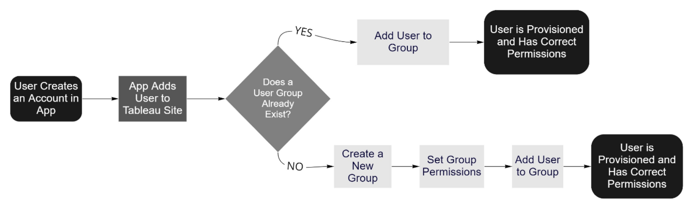
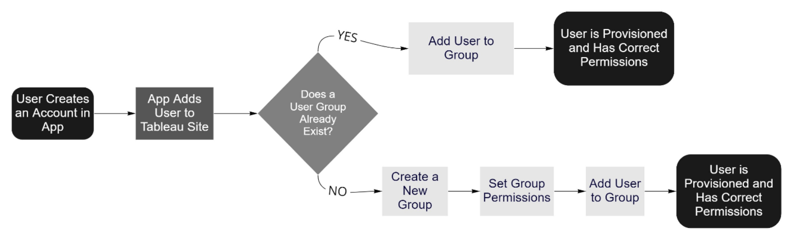

Professional Work

Technical Writing Intern for Tableau, Summer 2022.
Technical Writing Intern for Salesforce, Summer 2023.
REST API Improvement Plan
Improvement plan for the Tableau Help site to update REST API methods. Collaborated with the DevDocs team to create a template, tested new revisions, and converted code.
Documented the process using MadCap Flare software with languages: HTML, XML, and JSON.
Visit the Tableau Help page link to see an endpoint I created for publishing a data point.
Open-Source Postman Collection/Environment Documentation
Procedural document with instructions on how to download and import the collection/environment. Collaborated with the Solutions Engineering tema
to test and implement new aspects: automaic sign-in, detailed error codes, and reusable variables.
Presented to my internal team about my findings during testing, future goals for the Postman collection, and the efficiency of using the API platform.

User Management Walkthrough
Walkthrough that covers the basics of using Tableau REST API to manage users and groups. Created a procedural document guiding the user
through making direct requests using python, and using the Tableau Server Client (TSC), a open-source python wrapper for the REST API supported by Tableau.
Site administrators can use supplemental files with code scripts to see the process of provisioning users.
JSON files with example user information is provided to run these scripts successfully.
 
